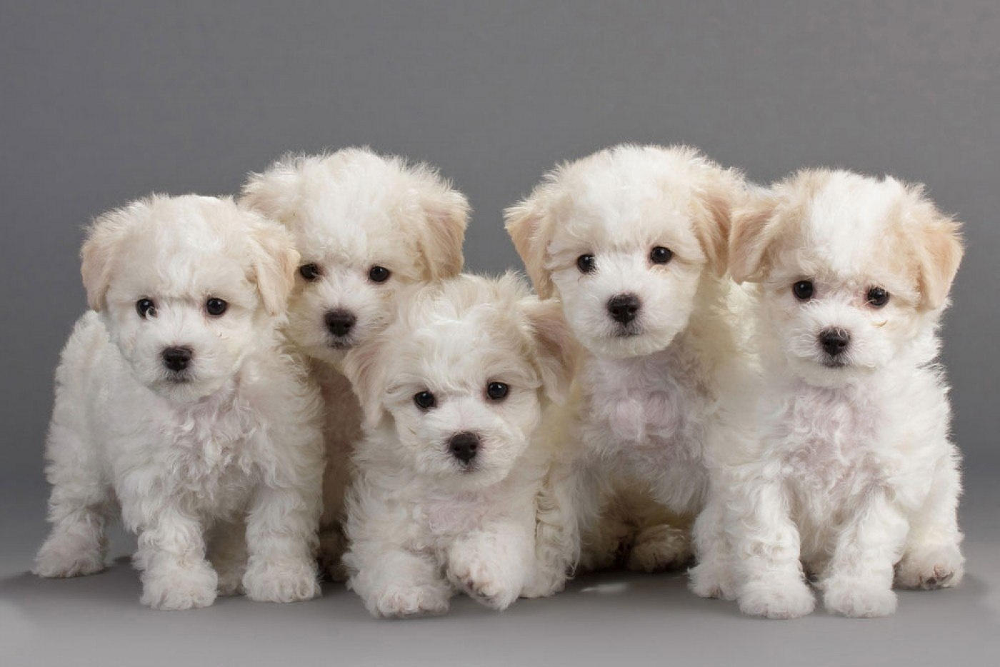
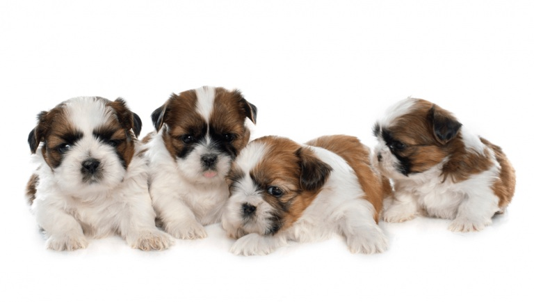
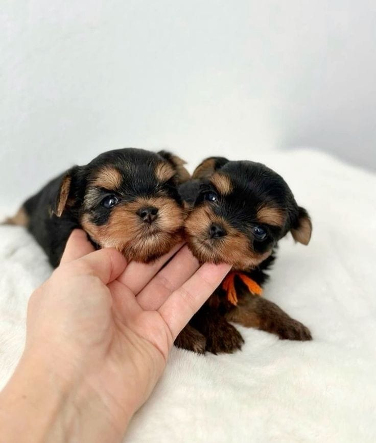

Despre noi
Sunt crescător pasionat și ofer spre adopție/vânzare pui de câini de rasă, sănătoși și îngrijiți, crescuți într-un mediu iubitor. Ofer poze reale și răspund cu drag la toate întrebările. În special ma ocup cu vanzarea a patru rase de cainie : Yorkshire Terrier, Maltipoo Poodle, Bichon Maltez, Shih Tzu. Dar uneori vindem și alte rase de caini. Pentru mai multe detalii aveți numărul meu de telefon afișat pe pagină!
Galerie foto

Bichon Maltez - este un câine de talie mică, elegant și afectuos, recunoscut pentru blana sa albă, lungă și mătăsoasă. Este un companion loial, calm și inteligent, ideal pentru viața de apartament și familii care caută un prieten devotat.

Shih Tzu - este o rasă de câini de talie mică, cunoscută pentru blana sa lungă, mătăsoasă și aspectul adorabil. Originar din Tibet și perfecționat în China imperială, Shih Tzu a fost considerat un câine de companie regal, fiind extrem de iubit în rândul nobilimii. Este un câine afectuos, prietenos și sociabil,

Yorkshire Terrier - este un câine mic, curajos și plin de energie, cunoscut pentru blana sa lungă și mătăsoasă. Este devotat, inteligent și perfect pentru companie, adaptându-se bine vieții în apartament.
Contact
- Locație: Bucuresti, România
Telefon: +40 792 060 155
Email: melekana85@gmail.com